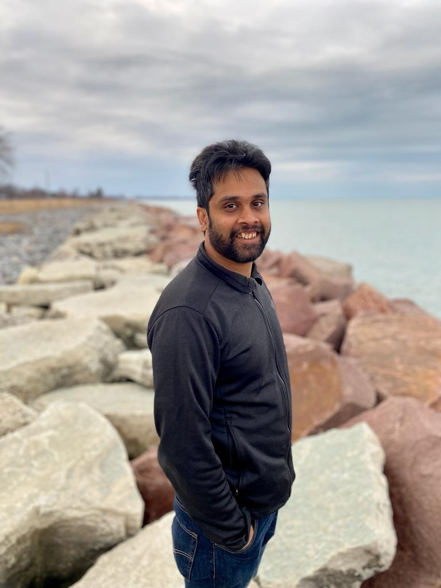
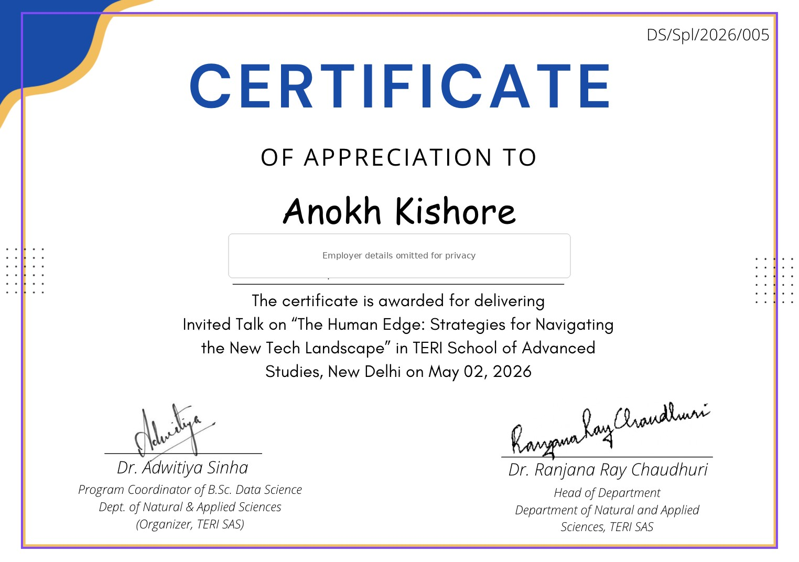
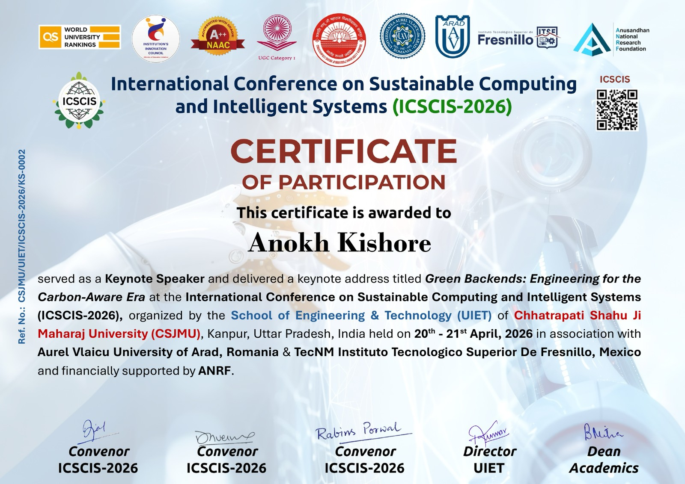
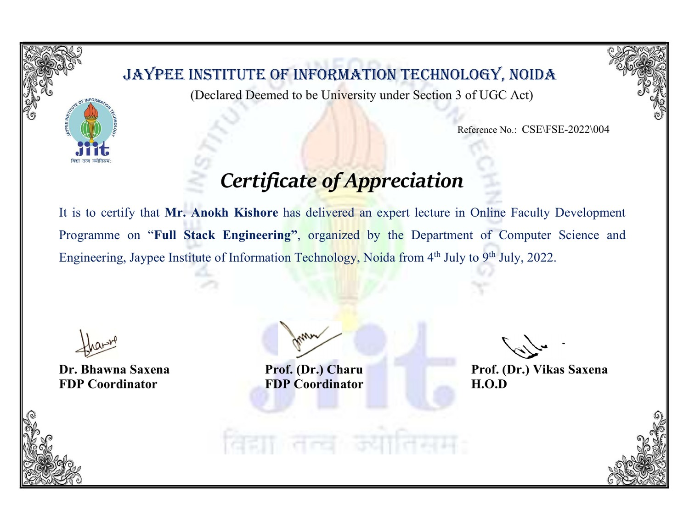
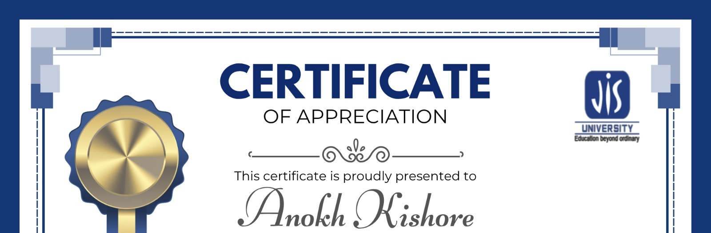

Multi-Granular Attention-Driven Reinforcement Learning Framework for Web Intelligent Enhancement Systems
Attention-based semantic modeling and adaptive reinforcement learning for intelligent web systems.
View publication ↗A highly experienced engineering leader with exceptional experience across big tech and finance, combining deep technical perspective with an active record of research, professional service and knowledge sharing.

A concise overview focused on engineering leadership and engagement with the wider technology community.
I am a highly experienced engineering leader with more than 15 years in technology, including extensive experience across big tech and finance. My interests span complex software systems, cloud and distributed computing, software architecture, high-performance engineering and applied artificial intelligence.
I am particularly interested in the intersection of technical depth, engineering leadership and the broader computing profession. Beyond industry, I contribute through peer-reviewed research, technical program committees, conference leadership, paper and journal reviewing, judging, academic and industry advisory work, and invited speaking.
Published work across intelligent systems, federated learning, cybersecurity, cloud security, enterprise risk and network science.
Research interests include intelligent systems, privacy-preserving machine learning, secure cloud environments, explainable AI, resilient infrastructure and network science.
Attention-based semantic modeling and adaptive reinforcement learning for intelligent web systems.
View publication ↗Privacy-preserving collaborative fraud detection across institutions using federated learning.
View publication ↗Explainable machine learning approaches for enterprise risk analysis and governance-oriented decision support.
View publication ↗Cross-institution fraud detection with privacy-aware, federated cloud learning.
View publication ↗Optimized deep learning for scalable network intrusion detection.
View publication ↗Adaptive security techniques for confidentiality and isolation in multi-tenant cloud environments.
View publication ↗Network-science research using association analysis to understand relationships among centrality indicators.
View publication ↗Technical program committees, peer review, judging, conference leadership and advisory activity.
Certificate previews are included as supporting evidence. Employer-specific lines are obscured on selected previews to keep this public profile employer-neutral.
Invited talks, keynote speaking and technical education focused on software engineering, AI and sustainable computing.
A talk on practical software architecture, scalability, reliability, observability and engineering trade-offs.
Invited talk at TERI School of Advanced Studies, New Delhi.

Keynote address at the International Conference on Sustainable Computing and Intelligent Systems (ICSCIS-2026).

Expert lecture in an online Faculty Development Programme at Jaypee Institute of Information Technology, Noida.

Invited online speaker for first-year computer science and engineering students at JIS University, Kolkata.
